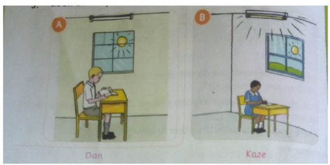

Which type of fuels are available in our homes?
Fuel is any material that is used to produce heat or light in our homes. Charcoal, firewood, paraffin, gas, and electricity are fuels.
Why do we use charcoal at home?
We use charcoal in our homes for various purposes:
| Fuel | What we can use it for |
|---|---|
| Firewood | Cook, heat or warm the house and provide light |
| Charcoal | Cook and provide heat or warmth in the house |
| Paraffin | Cook and provide light |
| Electricity | Cook, heat or warm the house and provide light |
| Gas | Cook and provide light |
How do we use and conserve fuels at home?
To conserve something is to use it without wasting. Using fuel without wasting it is conserving fuel.
We can conserve firewood and charcoal by using jikos that use less firewood or charcoal.
We can conserve electricity by using energy-saving bulbs and using electricity only when we need it.
What challenges can we face when using fuels?
- Some fuels are dangerous and can cause fire, like firewood.
- Some fuels produce so much smoke that is dangerous for our health.
- Fuel like gas can get finished before you start cooking.
- Electricity is very unreliable as it can be off without notice.
How do we keep safe when using fuels?
- Do not overload sockets.
- Check the gas cylinder and pipes to ensure they are not leaking. Do not sleep in a closed room that has a burning charcoal jiko.
Exercise
- Name any three fuels you see at your home.
- A grade four Learner used charcoal for cooking. How else can this learner use charcoal?
-
Look at the pictures below.
- Who is using fuel well in the pictures?
- Who is wasting fuel? Why?
- Write three ways we can conserve firewood at home.
- When using gas, what safety measures should you think about?